Persiguiendo el tiempoÓleo · 20 × 20 cm · 2023$2,250 MXNAlquimia IAcuarela · 35 × 24 cm · 2023$3,750 MXN
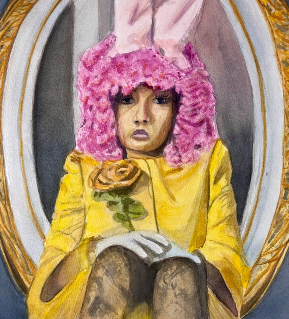
Persiguiendo el tiempo IIAcuarela y hoja de oro · 27 × 25 cm · 2023$2,700 MXNResacaAcuarela · 23 × 26 cm · 2021$1,800 MXNAuroraAcuarela · 32 × 24 cm · 2021$1,800 MXNDomingos de sopaAcuarela · 22 × 28 cm · 2023$1,200 MXN
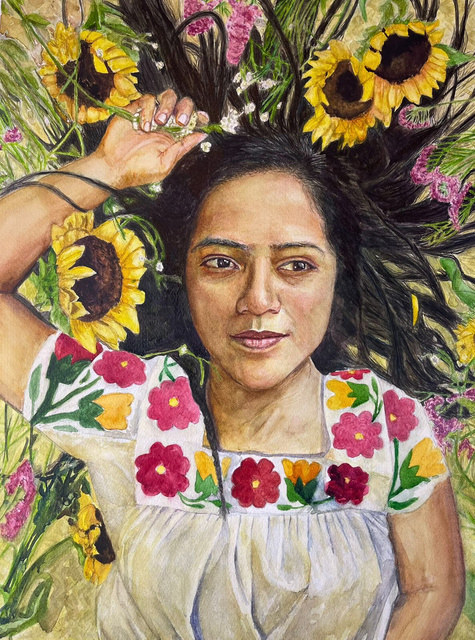
Entre floresAcuarela · 43 × 33 cm · 2021$5,250 MXN
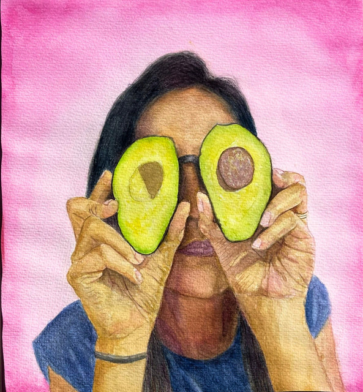
AguacatesAcuarela · 34 × 30 cm · 2023$1,800 MXNColibríAcuarela · 100 × 70 cm · 2021$1,800 MXN
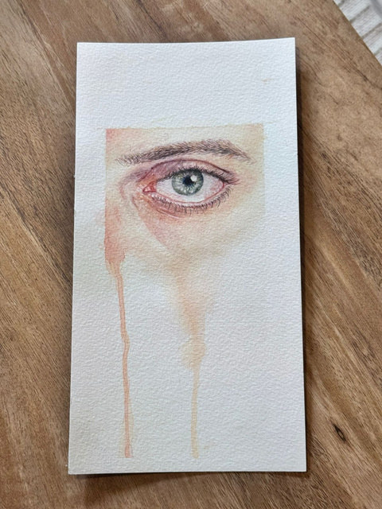
DesvanecerAcuarela · 12 × 23 cm · 2025$2,250 MXN
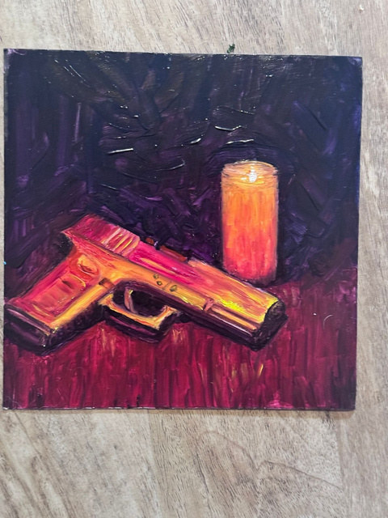
FuegoÓleo sobre cartón · 20 × 20 cm · 2025$1,800 MXN
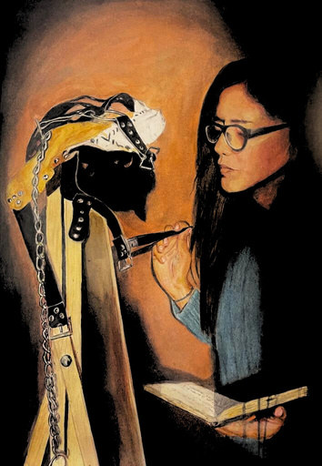
ReflexionesÓleo sobre lienzo · 30 × 30 cm · 2025$1,800 MXN
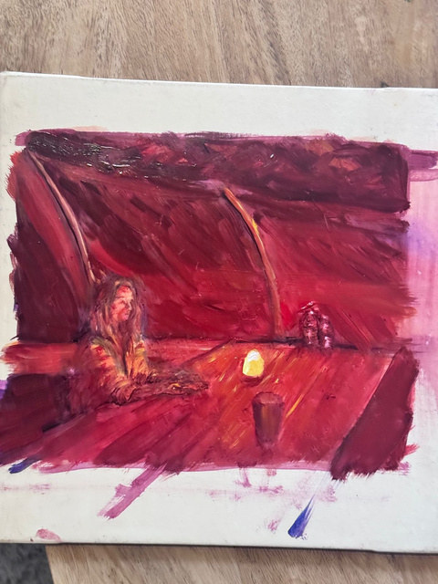
OponentePastel y acuarela · 62 × 44 cm · 2024$3,000 MXN
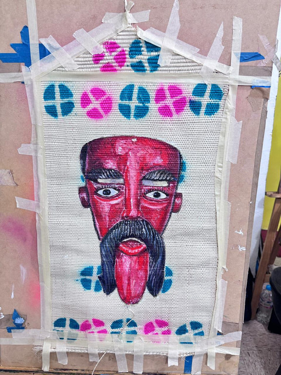
Indómita ExistenciaÓleo sobre fibra vegetal · 30 × 63 cm · 2025$3,300 MXN
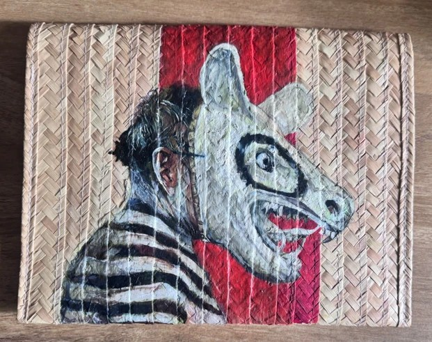
Remedio y defensaÓleo sobre fibra vegetal · 20 × 25 cm · 2025$3,300 MXN
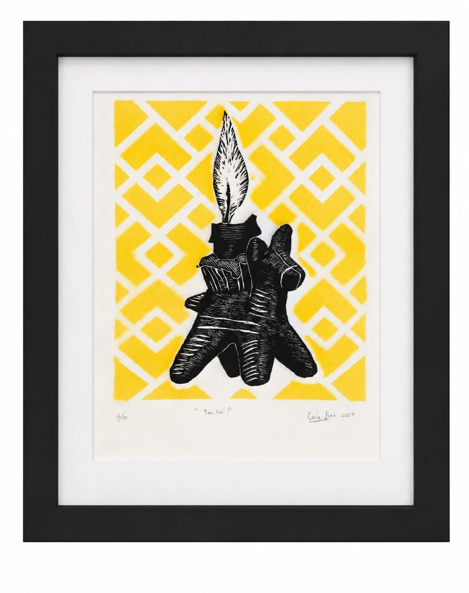
ToritoÓleo sobre lienzo · 20 × 22 cm · 2025$2,250 MXN
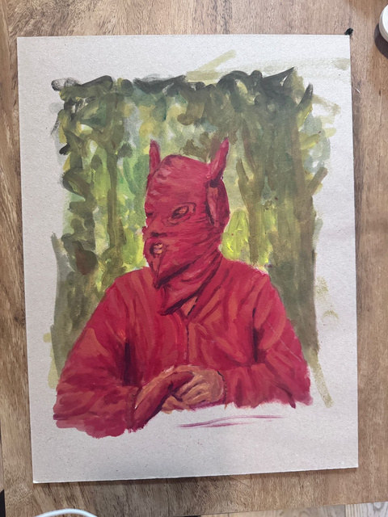
El ChotoÓleo sobre cartón · 38 × 30 cm · 2025$1,800 MXN
Grabado
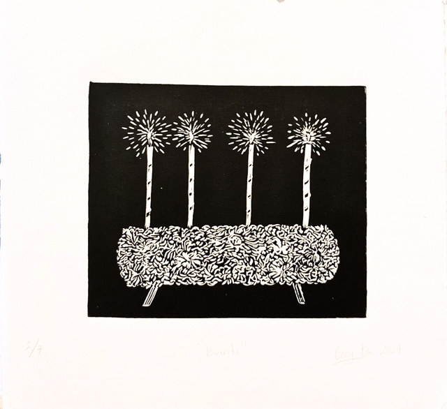
BurritoGrabado · 33 × 25 cm · 2025$2,250 MXN
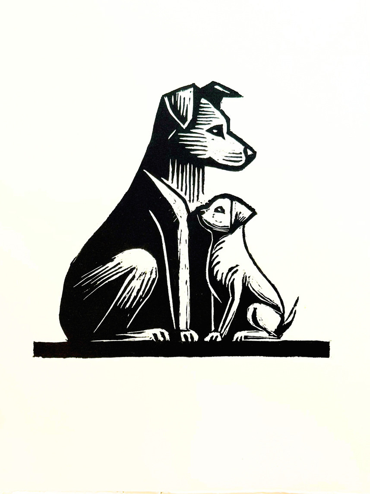
ProtecciónGrabado · 30 × 25 cm · 2025$2,250 MXN
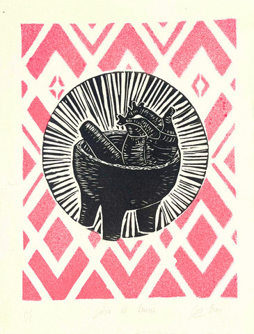
Salsa de CorazónGrabado y estencil · 33 × 25 cm · 2021Precio a consultar
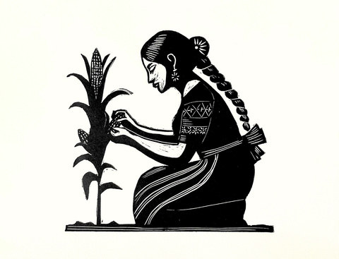
La cosechaGrabado · 33 × 25 cm · 2025$2,700 MXN
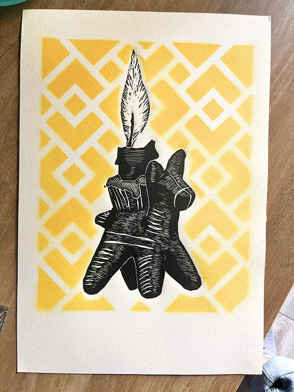
Ofrenda I (Torito)Grabado y estencil · 33 × 25 cm · 2025$2,700 MXN